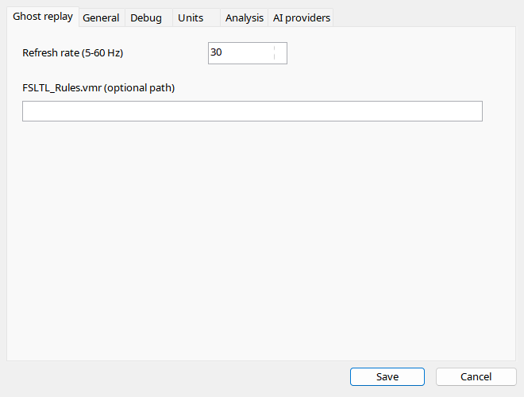

Load a flight in supported MSFS 2024, then select a recording. Ghost uses an independent connection/thread and remains separate from analysis replay. Stop it before changing files or sessions to remove its object. AIG/FSLTL matching uses models actually installed in Community; a VMR file does not install them. A substitute model may expose fewer animations despite complete samples.
Ghost creates a visual AI aircraft in a running supported simulator. It is not the user's aircraft and does not run the original addon's avionics.
| Option / action | Behavior and limitations |
|---|---|
| Play / pause | Starts/pauses the injected aircraft. Unlike offline replay, this needs a loaded flight and SimConnect. |
| Stop | Stops replay and removes the injected object. Stop before changing recording or simulator session. |
| Back / forward | Seek the ghost 10 seconds backward/forward, distinct from normal replay's 30-second jumps. |
| Refresh rate | 5–60 Hz, default 30. Higher rates send more updates; they do not increase original sample density or guarantee simulator performance. |
| Model matching | Installed AIG/FSLTL type and livery matches are considered; the best available match is preferred, otherwise default AI models. Models must actually be installed in Community. |
| Optional VMR | Supply FSLTL_Rules.vmr for matching rules or leave empty for automatic matching. A VMR does not install assets. |
| Animations | Position, attitude, supported gear/flaps/spoilers, controls, engines, lights and reversers depend on recorded data and the chosen model's writable inputs. Fallback models may show less. |
